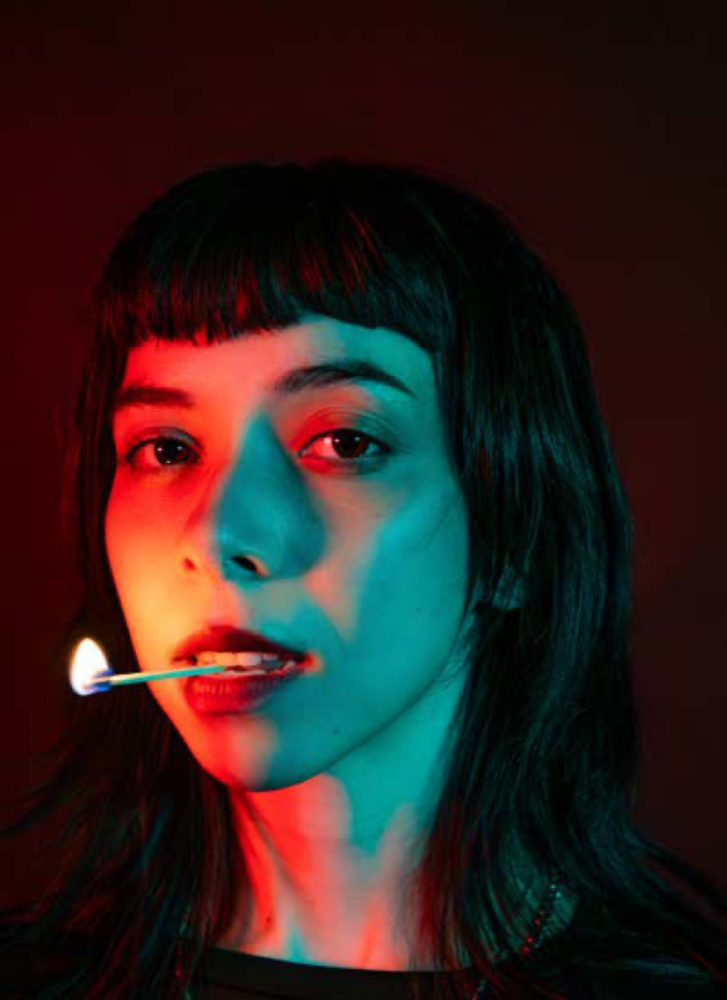
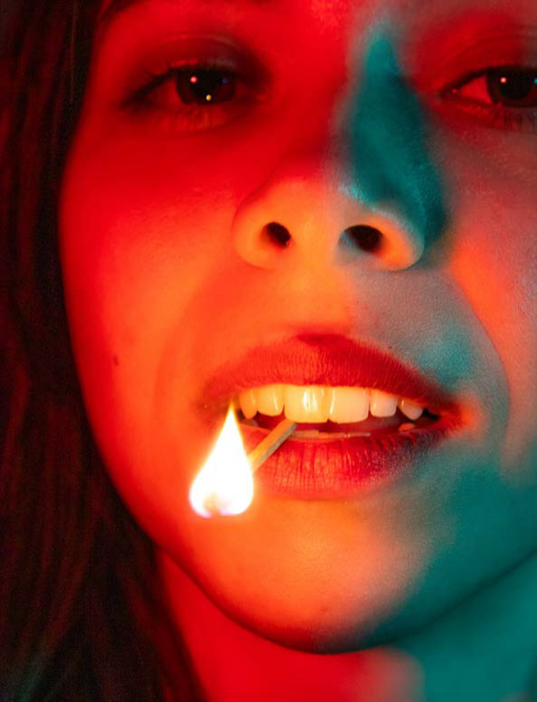
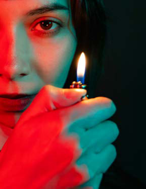
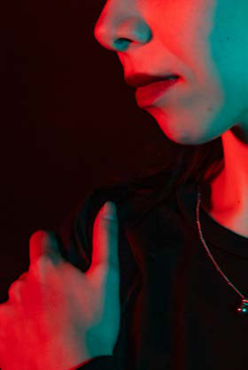
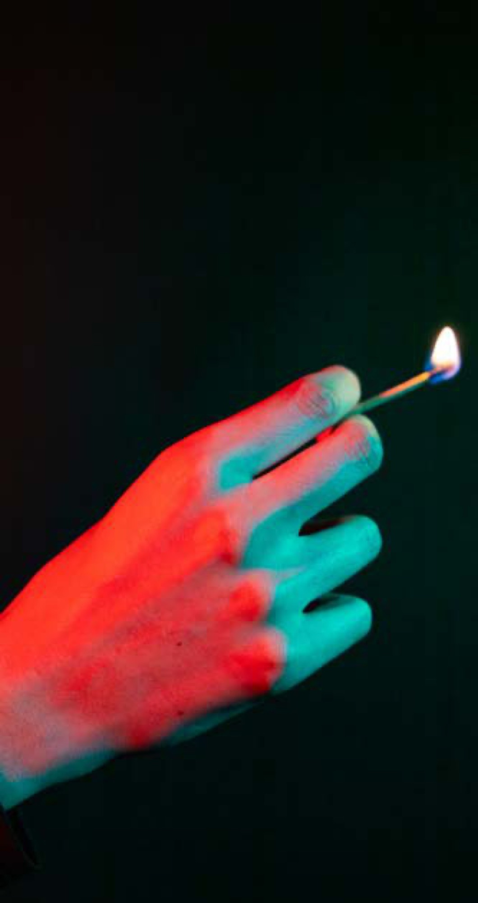
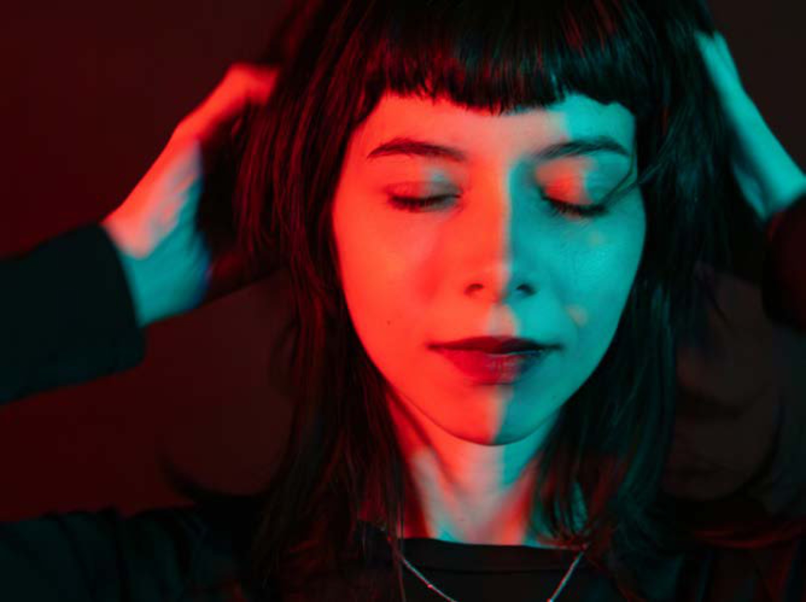

PHAM Nhu Quynh
Contact
PHAM Nhu Quynh
Contact
“Cubism” PortraitPortrait photography, photo collage
Portrait « Cubism »Photographie de portrait, collage photo
Intention
This project uses Cubist-inspired portrait photography to explore the complexity of human identity. By fragmenting the face and layering different emotional expressions—intense, chaotic, even surreal—it reflects inner conflict and psychological depth. Vibrant colors like red and orange evoke fire and emotion, while jade green and black provide contrast and mood, creating a striking visual narrative of vibrancy and madness.
Ce projet s’appuie sur la photographie de portrait d’inspiration cubiste pour explorer la complexité de l’identité humaine. En fragmentant le visage et en superposant différentes expressions — intenses, chaotiques, voire surréalistes —, il traduit le conflit intérieur et la profondeur psychologique. Les couleurs vibrantes comme le rouge et l’orange évoquent le feu et l’émotion, tandis que le vert jade et le noir apportent contraste et atmosphère, pour un récit visuel saisissant, entre éclat et folie.
“« Cubism” » Portrait

Portrait shotsPrises de vue





